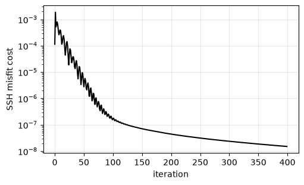
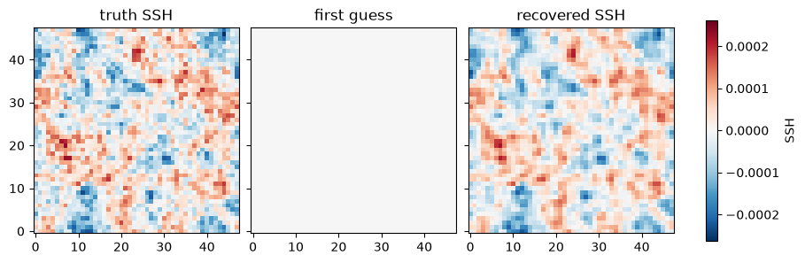

Variational Data Assimilation from SSH
Because the models in this package are differentiable, we can run gradient-based data assimilation (DA) directly through a simulation. This example is a twin experiment (an observing-system simulation experiment): we generate a “truth” run, sample synthetic sea-surface height (SSH) observations from it, and then try to recover the initial ocean state from those observations alone, using a strong-constraint 4D-Var.
The key point is that the adjoint model — the gradient of the
observation misfit with respect to the initial state — comes for free
from jax.grad() flowing back through the
jax.lax.scan() rollout. There is no hand-written adjoint.
import functools
import matplotlib.pyplot as plt
import jax
jax.config.update("jax_enable_x64", True)
import jax.numpy as jnp
import numpy as np
import pyqg_jax
Model and Observation Operator
We use the surface quasigeostrophic model, where SSH is directly proportional to the surface streamfunction, \(\eta = (f_0 / g)\,\psi_\text{surface}\). The streamfunction comes from inverting the surface buoyancy, so the observation operator is a differentiable function of the model state.
NX = 48
DT = 0.004
WINDOW = 30 # assimilation window length (steps)
OBS_EVERY = 3 # SSH observed every few steps
F_OVER_G = 1.0 / 9.81
model = pyqg_jax.sqg_model.SQGModel(
nx=NX, L=2 * np.pi, beta=0.0, Nb=1.0, f_0=1.0, H=1.0,
precision=pyqg_jax.state.Precision.DOUBLE,
)
stepped = pyqg_jax.steppers.SteppedModel(
model, pyqg_jax.steppers.AB3Stepper(dt=DT)
)
def initial_state(q0):
base = model.create_initial_state(jax.random.key(0)).update(q=q0)
return stepped.initialize_stepper_state(base)
def ssh(stepper_state):
# observation operator H: state -> sea-surface height
ph = stepped.model.get_full_state(stepper_state.state).ph[0]
return F_OVER_G * jnp.fft.irfftn(ph, s=(NX, NX), axes=(-2, -1))
We roll a state forward and collect the SSH at the observation times.
def observed_ssh(q0):
def step(carry, _x):
nxt = stepped.step_model(carry)
return nxt, ssh(nxt)
_final, traj = jax.lax.scan(step, initial_state(q0), None, length=WINDOW)
return traj[OBS_EVERY - 1 :: OBS_EVERY]
Generate the Truth and Synthetic Observations
The truth is a random surface field. We sample SSH from it over the window; these are the “observations” the assimilation will see (here without observation noise).
q_true = 8e-3 * jax.random.normal(jax.random.key(11), (1, NX, NX))
q_true = q_true - q_true.mean()
obs = observed_ssh(q_true)
print(f"{obs.shape[0]} SSH snapshots observed over the window")
10 SSH snapshots observed over the window
The 4D-Var Cost and Its Gradient
The control variable is the initial state q0. The cost is the
squared mismatch between the predicted and observed SSH over the
window. Its gradient with respect to q0 is the adjoint, obtained with
jax.value_and_grad().
def cost(q0):
return jnp.sum((observed_ssh(q0) - obs) ** 2)
value_and_grad = jax.jit(jax.value_and_grad(cost))
Minimize
Starting from a zero first guess (deliberately wrong), we minimize with a few hundred steps of Adam. In practice one would use L-BFGS; Adam keeps this example self-contained.
q = jnp.zeros((1, NX, NX))
m = jnp.zeros_like(q)
v = jnp.zeros_like(q)
lr = 5e-3
history = []
for it in range(1, 401):
J, g = value_and_grad(q)
history.append(float(J))
m = 0.9 * m + 0.1 * g
v = 0.999 * v + 0.001 * g**2
q = q - lr * (m / (1 - 0.9**it)) / (jnp.sqrt(v / (1 - 0.999**it)) + 1e-12)
print(f"cost reduced {history[0]:.2e} -> {history[-1]:.2e} "
f"({history[0] / history[-1]:.0f}x)")
cost reduced 1.14e-04 -> 1.50e-08 (7588x)
plt.figure(figsize=(5, 3), layout="constrained")
plt.semilogy(history, "k-")
plt.xlabel("iteration")
plt.ylabel("SSH misfit cost")
plt.grid(True, alpha=0.3)

Did It Recover the State?
We compare the recovered initial SSH field with the truth.
eta_true = ssh(initial_state(q_true))
eta_first = ssh(initial_state(jnp.zeros((1, NX, NX))))
eta_recovered = ssh(initial_state(q))
vmax = float(jnp.abs(eta_true).max())
fig, axs = plt.subplots(1, 3, figsize=(9, 3.2), layout="constrained",
sharex=True, sharey=True)
for ax, field, title in zip(
axs,
[eta_true, eta_first, eta_recovered],
["truth SSH", "first guess", "recovered SSH"],
):
im = ax.imshow(field, cmap="RdBu_r", vmin=-vmax, vmax=vmax, origin="lower")
ax.set_title(title)
fig.colorbar(im, ax=axs, shrink=0.8, label="SSH")
<matplotlib.colorbar.Colorbar at 0x7f71380ff510>

def corr(a, b):
a = np.asarray(a).ravel()
b = np.asarray(b).ravel()
return np.corrcoef(a, b)[0, 1]
full_true = stepped.model.get_full_state(initial_state(q_true).state)
full_rec = stepped.model.get_full_state(initial_state(q).state)
print(f"recovered vs truth correlation (initial time):")
print(f" SSH field : {corr(eta_recovered, eta_true):.3f}")
print(f" surface velocity : {corr(full_rec.u[0], full_true.u[0]):.3f}, "
f"{corr(full_rec.v[0], full_true.v[0]):.3f}")
recovered vs truth correlation (initial time):
SSH field : 0.933
surface velocity : 0.646, 0.664
The large-scale surface flow — the SSH field and, with it, the geostrophic surface velocity — is recovered well from SSH observations alone. The finest scales are recovered less well: SSH is a smoothed view of the surface (\(\eta \propto \hat\psi \propto \hat q / \kappa\)), so it weakly constrains small-scale structure. That gap is exactly the submesoscale challenge that motivates assimilating richer observations.
Toward Realistic DA
This example is deliberately minimal. A production assimilation would add, on top of the same differentiable machinery:
observation noise and an observation-error weighting (the \(\mathsf{R}^{-1}\) matrix in the misfit),
a background term \(\lVert q_0 - q_b \rVert^2_{\mathsf{B}^{-1}}\) to regularize the under-determined inverse,
the SWOT swath geometry (subsample the SSH field to the satellite ground track instead of observing it everywhere),
additional observations (surface velocities, drifters — the particle advection is differentiable too),
jax.checkpoint()(rematerialization) for long windows, and a quasi-Newton optimizer such as L-BFGS.
All of these slot into the same jax.grad-through-the-model structure
shown here.